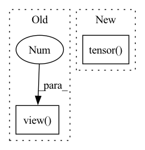

Pattern ID :8054
Before Change
Helper function that takes an integer vector and convert it to 1-hot matrix.
y_tensor = y_tensor.type(torch.LongTensor).view(-1 , 1)
y_one_hot = torch.zeros(
y_tensor.size()[0], n_dims
).scatter_(1, y_tensor, 1).to(y_tensor.device)After Change
device = y_tensor.device
y_tensor = torch.tensor(
y_tensor,
dtype=torch.long,
device=device,
) .view(-1, 1)
y_one_hot = torch.zeros(
y_tensor.size()[0], n_dims,In pattern: SUPERPATTERN
Frequency: 3
Non-data size: 2
Instances Fragment ID: 28569915
Project Name: dayyass/rllib
Commit Name: 5279c031f0574f3c2aadb45a981727f4c8c47963
Time: 2022-08-13
Author: dayyass@yandex.ru
File Name: rllib/utils.py
M Class Name: AnonimousClass
N Class Name: AnonimousClass
M Method Name: to_one_hot(2)
N Method Name: to_one_hot(2)
M Parent Class:
N Parent Class:
M File Name: rllib/utils.py
N File Name: rllib/utils.py
M Start Line: 37
M End Line: 41
N Start Line: 37
N End Line: 48
Before Change
model.zero_grad()
if args.model == "Transformer":
output = model(data)
output = output.view(-1 , args.ntokens)
else:
hidden = repackage_hidden(hidden)
output, hidden = model(data, hidden)
loss = criterion(output, target)After Change
model.train()
train_sampler.set_epoch(epoch)
train_loss = Metric("train_loss")
total_loss = torch.tensor( 0.)
elapsed_steps = 0
for scheduler in lr_schedules:
scheduler.step() Fragment ID: 28569914
Project Name: gpauloski/kfac_pytorch
Commit Name: 9c6365eed419a9b65cb67dc0f7b6d1680d0b54e4
Time: 2020-04-09
Author: gpauloski@yahoo.com
File Name: examples/pytorch_wikitext_rnn.py
M Class Name: AnonimousClass
N Class Name: AnonimousClass
M Method Name: train(10)
N Method Name: train(10)
M Parent Class:
N Parent Class:
M File Name: examples/pytorch_wikitext_rnn.py
N File Name: examples/pytorch_wikitext_rnn.py
M Start Line: 249
M End Line: 296
N Start Line: 257
N End Line: 302
Before Change
[ 1.2761, -0.2929, 0.0000]]])
assert input.shape[-1] == 3, "Last dim should be 3"
shape, v = input.shape, input.view( -1,3 )
S = torch.zeros(v.shape[:-1]+(3,3), device=v.device, dtype=v.dtype)
S[:,0,1], S[:,0,2] = -v[:,2], v[:,1]
S[:,1,0], S[:,1,2] = v[:,2], -v[:,0]
S[:,2,0], S[:,2,1] = -v[:,1], v[:,0]After Change
[ 2.2059, 0.0000, 0.2929],
[ 1.2761, -0.2929, 0.0000]]])
v = input.tensor() if hasattr(input, "ltype") else input
assert v.shape[-1] == 3, "Last dim should be 3"
O = torch.zeros(v.shape[:-1], device=v.device, dtype=v.dtype, requires_grad=v.requires_grad)
return torch.stack([torch.stack([ O, -v[:,2], v[:,1]], dim=-1), Fragment ID: 28569918
Project Name: pypose/pypose
Commit Name: b99366ff08a6f114feec3211f2bd893fd6c1824e
Time: 2022-05-03
Author: jeffsan@gmx.com
File Name: pypose/lietensor/basics.py
M Class Name: AnonimousClass
N Class Name: AnonimousClass
M Method Name: vec2skew(1)
N Method Name: vec2skew(1)
M Parent Class:
N Parent Class:
M File Name: pypose/lietensor/basics.py
N File Name: pypose/lietensor/basics.py
M Start Line: 35
M End Line: 40
N Start Line: 34
N End Line: 39